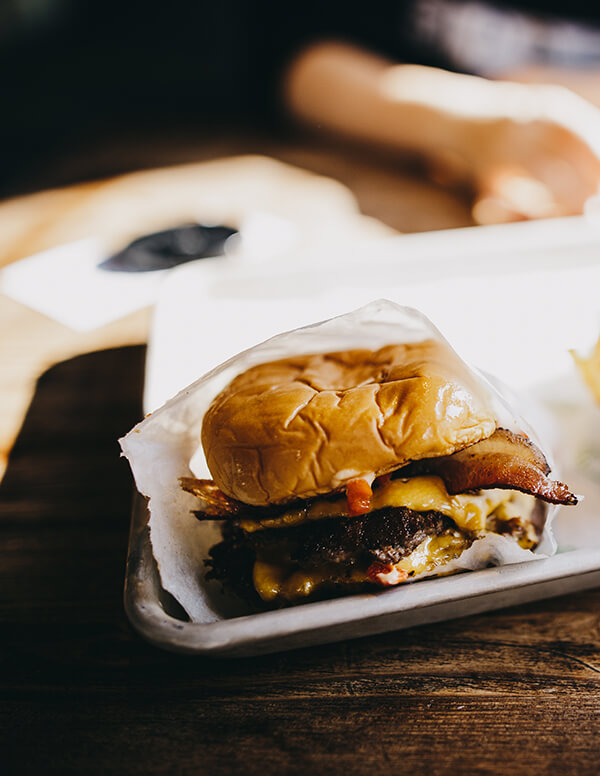
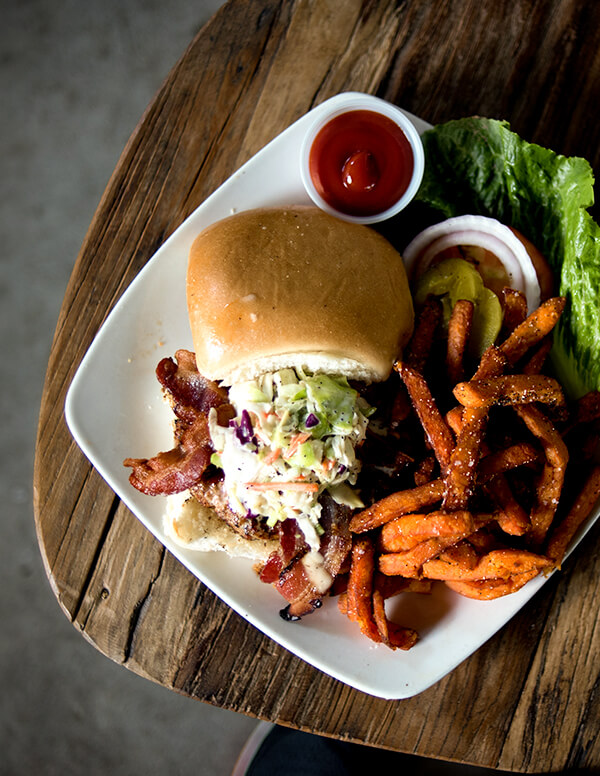
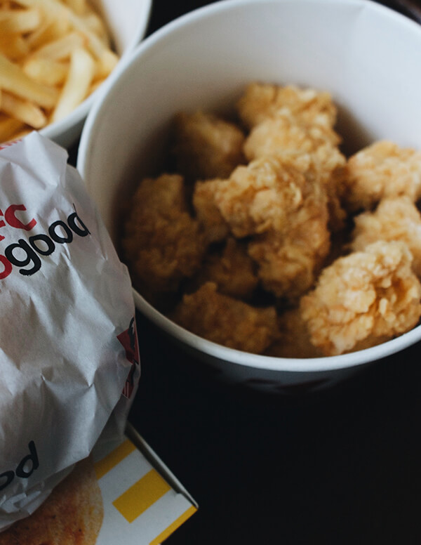
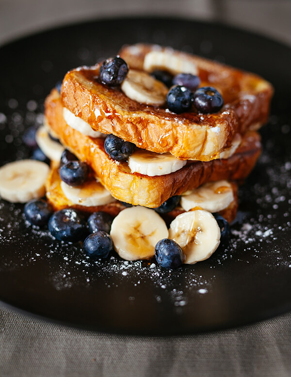
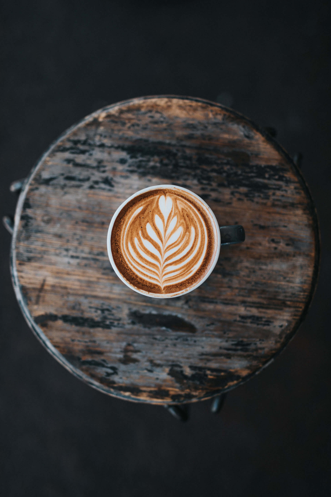

A little about us
Good things take time.
We believe the best days begin with a proper cup and no rush. Our kitchen works with local growers and our baristas make every cup with care.




A neighborhood café for thoughtfully made coffee, fresh plates, and one more story at the table.
Explore our menuWe believe the best days begin with a proper cup and no rush. Our kitchen works with local growers and our baristas make every cup with care.




18 Willow Lane, Portland
Monday–Friday · 7am–4pm
Weekends · 8am–3pm
